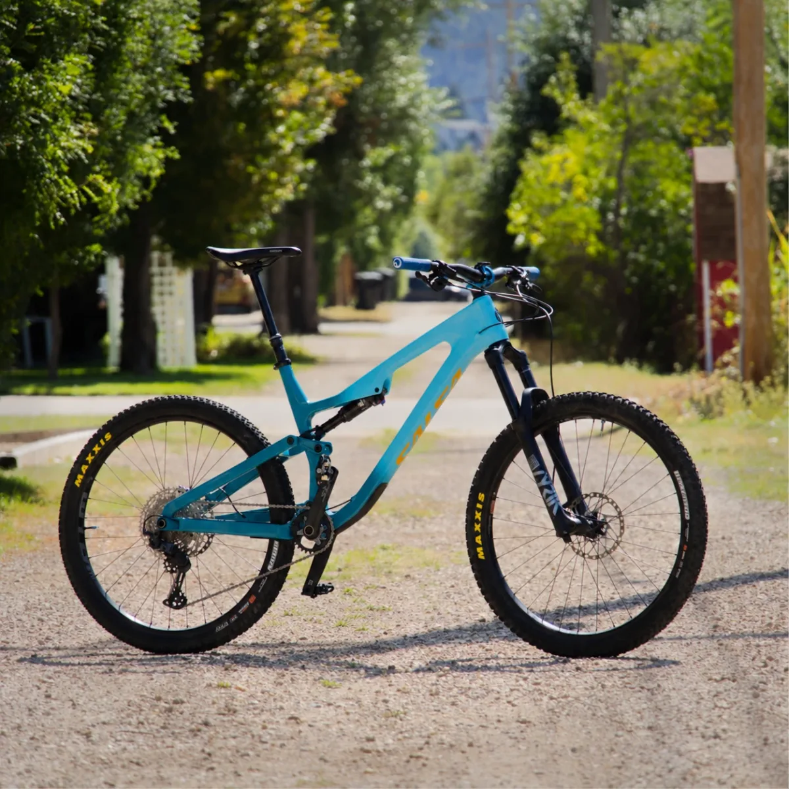
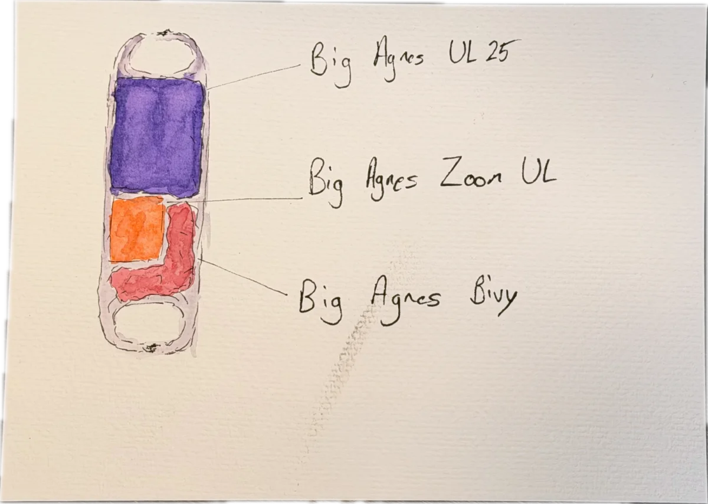
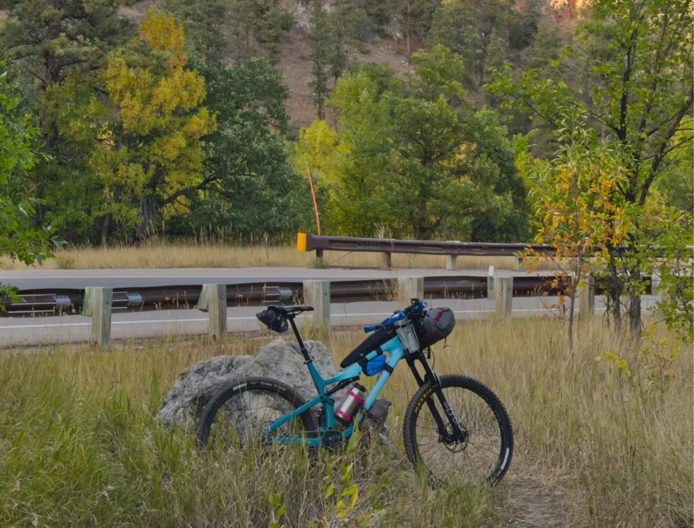

Tower 300
- 300 miles
- 25,800 ft
- 73 mi single track
When my tires hit ground Thursday morning at 6:05am, I'll be kicking off my first attempt at an ultra MTB race: The Tower 300. Meandering through the Northern Black Hills and Bear Lodge mountains, this route covers 300 total miles paired with 25,800 ft of elevation gain. 73 of these miles are technical single track, requiring a mountain bike with bag strategies and sleep systems I am not as practiced with, a fun way to expand my abilities!
I have not ridden a route this large before; I am both intimidated and inspired. Going into a ride like this, you would hope to feel as healthy as you ever have. Unfortunately, I have some lingering pain in my left leg… we will see how that affects my race. 😅 Regardless, I am excited to spend some time traversing what I consider home as leaves turn and temperatures drop. If you want to follow along with my ride, the live track is at maps.findmespot.com/s/GQF5.
Live track
Map not loading? Open the SPOT tracker in a new tab.
The Rig


I'll be riding a 2024 Salsa Rustler. My sleep system is entirely Big Agnes with bags from Revelate and Almsthre. My stats and routing are handled by a Wahoo Elemnt Roam bike computer.
